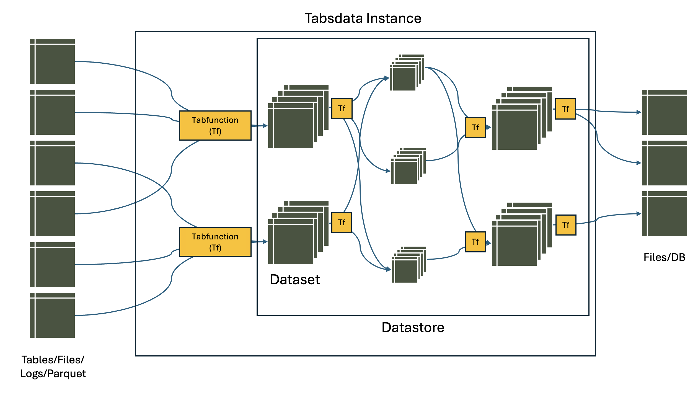

Core Concepts#
<<DOUBT: HOW TO INCLUDE PUB-SUB AS A CORE CONCEPT?>> <<DOUBT: HOW TO THINK ABOUT CROSS-LINKING TERMS ACROSS DOCUMENTS? Once in every doc or linking every occurence?>>
Table#
A table is a view of data organized in rows and columns. It is similar to a spreadsheet or SQL table. Each column has a name and all the values in the column have the same type.
In the context of Acme Inc, Tabsdata Tables would represent individual tables concerning marketing campaigns, transaction data, inventory, sales data, etc.
Tabsdata supports all Polars’ datatypes, as listed below:
Numeric data types: signed integers, unsigned integers, floating point numbers, and decimals.
Nested data types: lists, structs, and arrays.
Temporal: dates, datetimes, times, and time deltas.
Miscellaneous: strings, binary data, Booleans, categoricals, enums, and objects.
Note: All types support missing values represented by the special value `null`. This is not to be conflated with the special value `NaN` in floating number data types.
Tabfunction#
The tabfunction is a programmatic artifact that produces and modifies data inside the tables. Every table has a tabfunction. A tabfunction takes as input a set of tables (one or more) and produces as output a set of tables (one or more).
There are three kinds of tabfunctions:
Publishers: read data from external systems into Tabsdata for further processing
Tansformers: Modify data within Tabsdata
Subscribers: Export data from Tabsdata system to external systems
Data Version <<Table version>>??#
The output of a successful execution of a tabfunction is called a table version. All the tables within Tabsdata system are table versions and are an output of some tabfunction.
Each successful execution of a tabfunction creates a new version of tables. Calling a table as an input points to the latest version of a dataset. Tabsdata keeps previous versions of the table and the corresponding data for auditing and traceability.
Once created, the data in a table version is immutable.
Tabfunction Execution <<DOUBT: Trigger?>>#
Whenever a tabfunction executes a new version of data is generated.
A tabfunction execution can be initiated manually (by defining in code), or using triggers (only available in Enterprise version). Triggers are automatically initiated by a change in input data.
Datastore#
Datastore is a collection of tables. All access and ownership permissions are managed at datatore level.
In the context of Acme Inc, a datastore would be equivalent of departments such as sales, marketing, supply chain etc.
Server and Instance#
All datastores, and consequently all data in Tabsdata system, are contained inside an instance of a Tabsdata server.
A Tabsdata server is a binary installation via pip install. When installed a user must create an instance of Tabsdata.
A Tabsdata server can run one or more instances at a time. The user can create, start, stop and delete an instance of Tabsdata.